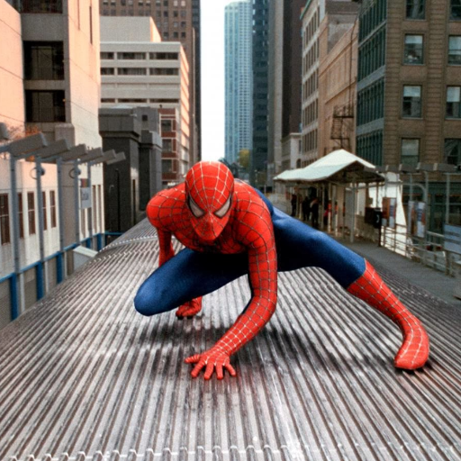
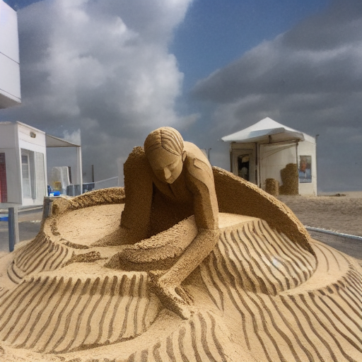

Transition Results
(Click image to play video)

Scene 1

Scene 2
Spiderman becomes a sand sculpture.
Scene 1
Scene 2
Flying through the clouds, a landscape appears.

Scene 1

Scene 2
A cat from sitting on the coach transfer to lying on the sand.
Scene 1
Scene 2
The panda is diligently working in the office and reading a paper.
Scene 1.
Scene 2.
Landscape from autumn transfer to winter.